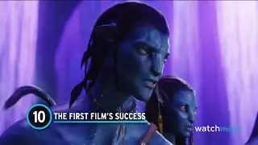
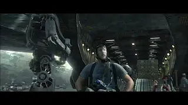
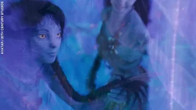

Top 10 Things to Remember Before Seeing Avatar The Way of Water

Avatar | Official Trailer (HD) | 20th Century FOX

Avatar Actors Intense Under Water Training
Top 10 Things to Remember Before Seeing Avatar The Way of Water
Avatar | Official Trailer (HD) | 20th Century FOX
Avatar Actors Intense Under Water Training
Avatar: The Way of Water | Official Trailer
Set more than a decade after the events of the first film, “Avatar: The Way of Water” begins to tell the story of the Sully family (Jake, Neytiri, and their kids), the trouble that follows them, the lengths they go to keep each other safe, the battles they fight to stay alive, and the tragedies they endure. Directed by James Cameron and produced by Cameron and Jon Landau, the Lightstorm Entertainment Production stars Sam Worthington, Zoe Saldaña, Sigourney Weaver, Stephen Lang and Kate Winslet. Screenplay by James Cameron & Rick Jaffa & Amanda Silver. Story by James Cameron & Rick Jaffa & Amanda Silver & Josh Friedman & Shane Salerno. David Valdes and Richard Baneham serve as the film’s executive producers.
Twitter: @OfficialAvatar @20thCentury FB/IG: @avatar @20thCenturyStudios